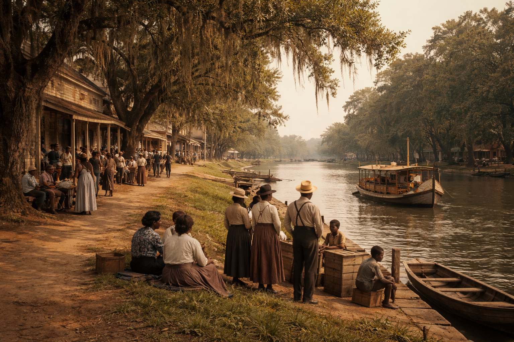

Natchitoches was established in 1714, by a French Canadian explorer. The Red River runs right through the city and it is now known as the Cane River.
The city served as a trading post for the Indian and Spanish territories. Today there are still bits of history all over the city!
Lest I not forget about the French Market. Stop in for a sweet yam loaf. We cant wait to meet you!

Natchitoches is made up of many different cultures such as French, Spanish, African, American Indian, & Creole.
These differnt cultures settled here due to the vast amounts of trading along the Red River.
Today the river is a peaceful place for all to enjoy, and even more exciting is December when the Christmas lights go up spanning the river.